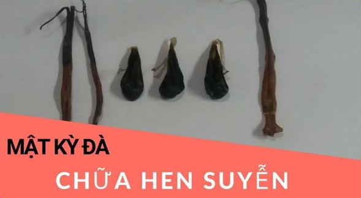
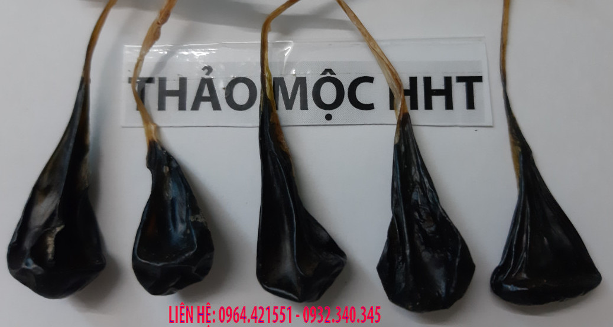

CÁCH DÙNG MẬT KỲ ĐÀ CHỮA HEN PHẾ QUẢN, HEN SUYỄN¶
Mật kỳ đà có nhiều tác dụng, một trong những tác dụng tốt nhất chính là tác dụng chữa hen phế quản, hen suyễn. Hôm nay chúng tôi chia sẻ cách sử dụng mật kỳ đà để các bạn tham khảo.
1. Cách chia mật kỳ đà¶
Mật kỳ đà mua về nếu là mật tươi thì bạn để trong ngăn mát tủ lạnh, hoặc tủ đá, khi sử dụng thì để lên ngăn mát. Khi dùng thì bạn lấy bơm kim tiêm hút từ 2ml đến 3 ml.
Mật khô thì bạn cho vào nước ấm tầm 3 phút sau đó bỏ ra ngoài một lúc cho mật mềm, lấy tay bóp thấy mềm là được, nếu ngâm nước quá lâu thì cần lấy bơm kim tiêm để hút mật hoặc treo mật lên 1 ngày thì mật khô lại.
Khi mật mềm lấy kéo cắt thành từng phần nhỏ mỗi phần bằng hạt thóc hoặc hạt đậu xanh, hoặc đậu đen. Với trẻ em thì chia thành những phần bằng hạt thóc, người lớn thì chia thành những phần bằng hạt đậu xanh hoặc hạt đậu đen.
2.Video:Cách chia mật kỳ đà¶
3. Mật kỳ đà uống với nước.¶
Đây là cách dùng cho cả người lớn và trẻ nhỏ, người không uống được rượu, hoặc không muốn pha với rượu. Mật khô thì lấy một phần mật pha với 10 ml nước ấm khuấy cho tan đều rồi uống. Mật tươi thì lấy từ 2 đến 3ml mật pha với 10ml nước ấm.
Khi dùng quen thì có thể lấy một phần mật khô uống như uống viên thuốc cho nhanh.
Nếu bạn sợ đắng thì lấy mật cho vào trong viên con nhộng rồi uống.
4. Mật kỳ đà pha sữa¶
Mật tươi dùng 2 đến 3 ml mật pha với 10ml sữa uống luôn. Mật khô dùng một phần cho 10ml sữa đánh tan mật rồi uống.
5. Mật kỳ đà pha với mật ong.¶
Trước khi pha vào mật ong thì mật khô phải pha vào nước cho tan ra rồi mới cho vào mật ong. Thường lấy một phần mật khô cho vào 5 ml nước ấm, đánh tan rồi cho tầm 10 ml mật ong vào khuấy đều rồi uống.
Với mật tươi thì chỉ cần hút mật rồi pha vào mật ong là xong.
6. Mật kỳ đà ngâm rượu¶
Bạn uống được rượu thì đây là cách tốt nhất, rượu có tác dụng dẫn mật đi nhanh hơn, ngoài việc chữa hen suyễn, hen phế quản nó còn có tác dụng giúp tiêu hóa tốt hơn.
Thường thì dùng cả cái mật cắt làm vài phần rồi cho vào ngâm rượu, một cái mật dùng được tầm 5 đến 7 ngày thì pha tầm 14 chén nhỏ. Mỗi ngày dùng 02 ly nhỏ.
7. Lưu ý khi dùng mật kỳ đà¶
Khi dùng mật bạn cảm thấy người mệt thì nên giảm liều dùng, hoặc nghỉ ngơi vài ngày rồi hãy uống lại.
Liên hệ với người bán mật để được tư vấn thêm.
8. Các bài viết có thể bạn chưa xem¶
Để biết các thông tin chi tiết hơn về mật kỳ đà mời các bạn xem bài viết tại đây:
Mật kỳ đà có nhiều tác dụng ngoài tác dụng chữa Bệnh hen phế quản, hen suyễn, mật kỳ đà còn có tác dụng chữa bệnh động kinh. Mời các bạn xem bài viết tại đây: